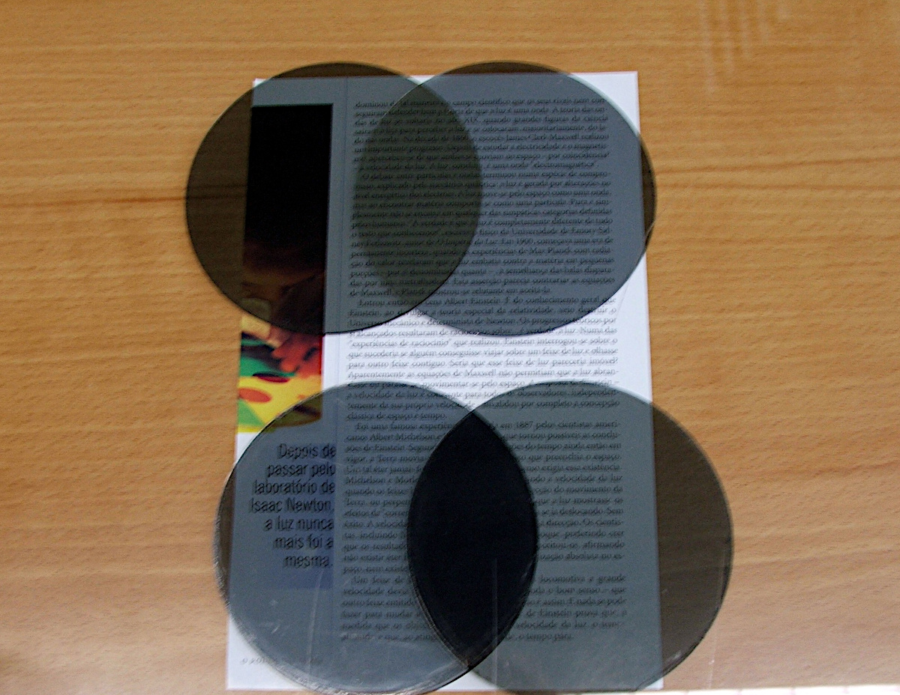

Polarization of light
The polarization of light is another prove of its wave nature. Some crystals have the property of polarizing light: only a part of the light, oscillating in a given plane, can pass through them. Light coming out of a polarizing filter oscillates in a single plane.
If we place a second polarizing filter after the first and if the polarization planes of the two filters were perpendicular, no light will come out of the two filters. Light is also polarized when reflected on a surface. If we look at the light reflected on a surface through a polarizing filter, rotating the filter will make the reflection disappear when the polarization plane of the filter is perpendicular to the plane of the surface.
Liquid crystal have the property of polarizing light when there is an electric current through them. That property is used to construct the LCD (Liquid Crystal Display) in a calculator or cellular phone.
The polarization of light can be easily explained assuming that light is a transversal wave (namely, it oscillates in a plane perpendicular to the direction of propagation). But at the time of Newton and Huygens that argument was in fact used against the wave theory of light. According to Huygens light waves would be oscillations of a hypothetical medium called ether in the same way that sound waves are oscillations of the air. But waves propagating in an elastic medium, such as sound, must always be longitudinal waves (the medium particles oscillate in the same direction as the wave propagates). Thus, Newton concluded, Huygen's wave theory of light cannot be valid.